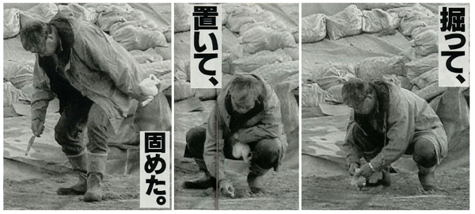

구석기 시대 일본은 빙하기로 인해 한반도 및 타이완, 남중국과 육지로 연결되어 있었으며, 그 시기에 인류가 일본에 첫 발을 딛었다. 이후 해수면이 상승하면서 일본은 섬이 되었고, 일본 열도가 되었다.
일본의 구석기 시대는 약 12만 년 전에 시작했다.[1] 그 시기의 유물과 화석인류는 그다지 많이 남지 않았는데, 일본은 판 경계 특성상 지각 변동이 심하다는 점, 산성 화성암 토양이기 때문에 유골이 남기 어렵다는 점이 이유로 꼽힌다.[2] 그래도 아예 없지는 않고, 드문드문 발견되는 수준.
시즈오카의 화석인류인 하마키타(浜北)인, 1946년 발견된 군마의 이와주쿠(岩宿) 구석기 유적이 유명하다.[3] 1946년까지는 일본 열도에는 구석기 문화가 존재하지 않았던 것으로 여겨졌으나, 이와주쿠에서 타제석기 유적이 발견됨으로써 일본 구석기 문화의 존재가 세상에 알려졌다.
일본의 신석기 시대인 조몬 시대는 길게 보면 기원전 1만 년 경까지 거슬러 올라가지만, 청동기시대와 철기시대는 기원전 400년경을 전후로 한반도에서 유입한 도래인으로부터 급격하게 시작되었다. 도래인이 중심이 되어 시작한 기원전 400년 경부터 기원후 3세기까지의 시기를 야요이 시대라고 한다.
긴 세월동안 원시 수렵 채집 생활만을 반복하고 있었던 조몬인과는 달리 야요이인은 한 단계 더 발전한 문명인 농경 문화, 금속 제련 기술을 보유한채로 일본 열도에 진출했고, 그들에 의해 일본 열도는 단기간에 매우 급격한 변화를 맞이하게 됐다. 또한, 도래인 계통의 야요이인은 현대 일본인의 혈통 비율에서 87%~96.7%를 차지한다고 한다.[4]
이후, 기타큐슈와 혼슈 서부 및 남부[5]를 중심으로 소국들이 세워졌으며, 이합집산을 거쳐 4세기 경에는 현재의 나라현에서 미약하게나마 중앙 집권적인 체제를 갖춘 야마토 왕권이 등장하였고, 주변 소국들을 하나하나 복속시키며 외교력을 행사하기 시작하였다. 이 시기를 고훈 시대(古墳時代)라고 한다..